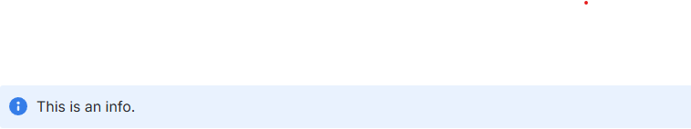
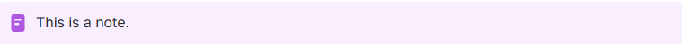
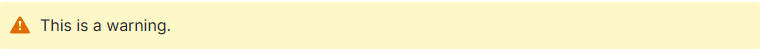
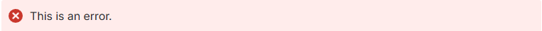

Getting Started
Requirements
- Python 3.11+
- PIP
Installation
You can install this tool using pip:
pip install md-to-conf
Usage
Basic
The minimum accepted parameters are the markdown file to upload as well as the Confluence space key you wish to upload to. For the following examples assume 'Test Space' with key: TST.
python3 md2conf.py readme.md TST
Mandatory Confluence parameters can also be set here if not already set as environment variables:
- -u --username: Confluence User
- -p --apikey: Confluence API Key
- -o --orgname: Confluence Organization
python3 md2conf.py readme.md TST -u basil -p abc123 -o fawltytowers
Use -h to view a list of all available options.
Environment Variables
To use it, you will need your Confluence username, API key and organization name. To generate an API key go to https://id.atlassian.com/manage/api-tokens.
You will also need the organization name that is used in the subdomain.
For example the URL: https://fawltytowers.atlassian.net/wiki/ would indicate an organization name of fawltytowers.
If the organization name contains a dot, it will be considered as a Fully Qualified Domain Name.
For example the URL: https://fawltytowers.mydomain.com/ would indicate an organization name of fawltytowers.mydomain.com.
These can be specified at runtime or set as Confluence environment variables
(e.g. add to your ~/.profile or ~/.bash_profile on Mac OS):
export CONFLUENCE_USERNAME='basil'
export CONFLUENCE_API_KEY='abc123'
export CONFLUENCE_ORGNAME='fawltytowers'
On Windows, this can be set via system properties.
Other Uses
Use -a or --ancestor to designate the name of a page which the page should be created under.
python md2conf.py readme.md TST -a "Parent Page Name"
Use -d or --delete to delete the page instead of create it. Obviously this won't work if it doesn't already exist.
Use -n or --nossl to specify a non-SSL url, i.e. http:// instead of https://.
Use -l or --loglevel to specify a different logging level, i.e DEBUG.
Use -s or --simulate to stop processing before interacting with confluence API, i.e. only converting the markdown document to confluence format.
Use --title to set the title for the page, otherwise the title is going to be the first line in the markdown file
Use --remove-emojies to emove emojies if there are any. This may be need if the database doesn't support emojies
Markdown
The original markdown to HTML conversion is performed by the Python markdown library. Additionally, the page name is taken from the first line of the markdown file, usually assumed to be the title. In the case of this document, the page would be called: Markdown to Confluence Converter.
Standard markdown syntax for images and code blocks will be automatically converted. The images are uploaded as attachments and the references updated in the HTML. The code blocks will be converted to the Confluence Code Block macro and also supports syntax highlighting.
Doctoc
If present, what is between the doctoc anchor format:
<!-- START doctoc ...
...
... END doctoc -->
will be replaced by confluence "toc" macro leading to something like:
<h2>Table of Content</h2>
<p>
<ac:structured-macro ac:name="toc">
<ac:parameter ac:name="printable">true</ac:parameter>
<ac:parameter ac:name="style">disc</ac:parameter>
<ac:parameter ac:name="maxLevel">7</ac:parameter>
<ac:parameter ac:name="minLevel">1</ac:parameter>
<ac:parameter ac:name="type">list</ac:parameter>
<ac:parameter ac:name="outline">clear</ac:parameter>
<ac:parameter ac:name="include">.*</ac:parameter>
</ac:structured-macro>
</p>
Information, Note and Warning Macros
Warning: Any blockquotes used will implement an information macro. This could potentially harm your formatting.
Block quotes in Markdown are rendered as information macros.
> This is an info

> Note: This is a note

> Success: This is a success
> Warning: This is a warning

> Error: This is an error

Alternatively, using a custom Markdown syntax also works:
~?This is an info.?~
~%This is a warning.%~
~^This is a success.^~
~$This is an error.$~
~!This is a note.!~